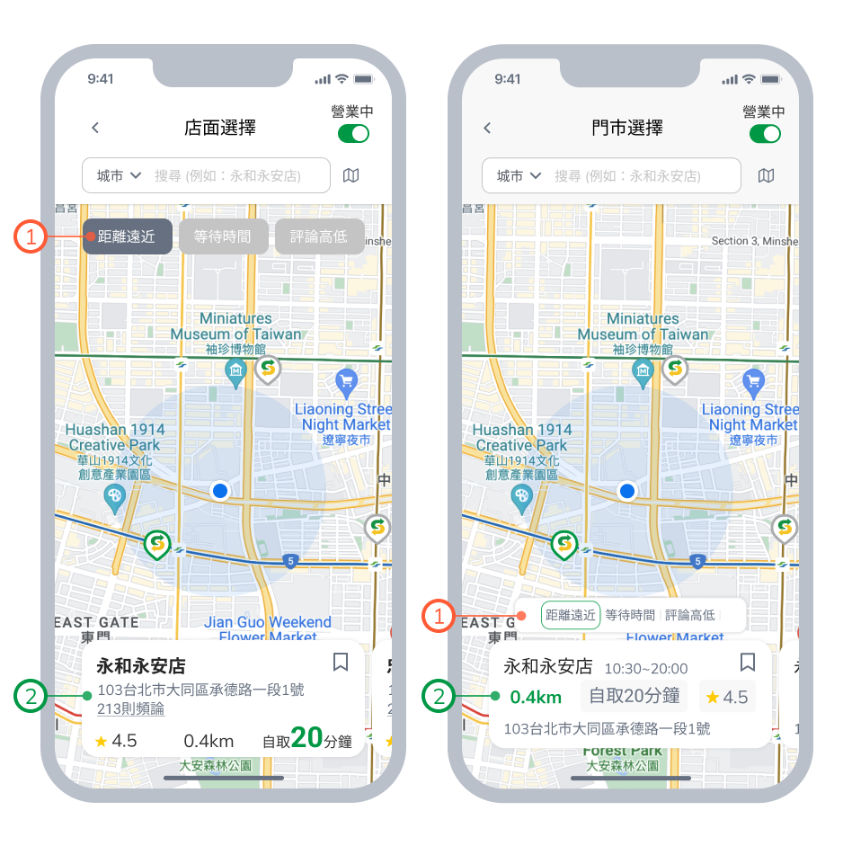
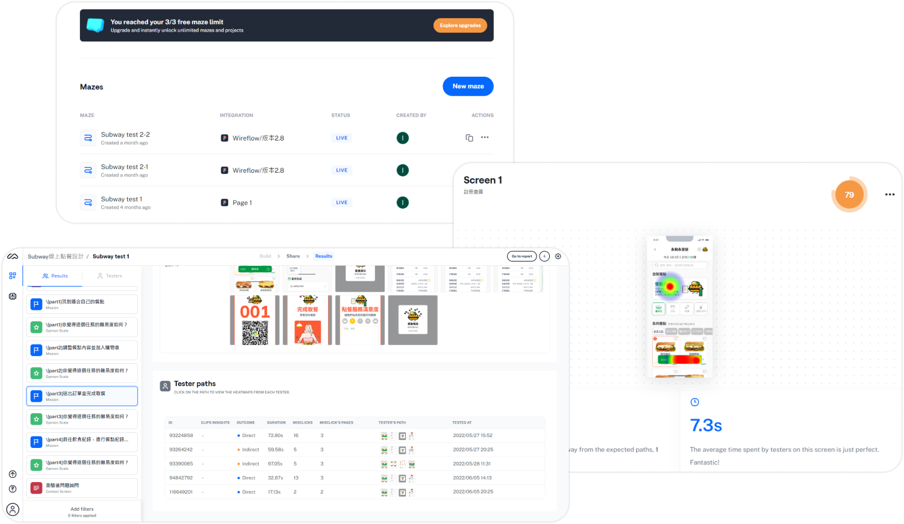
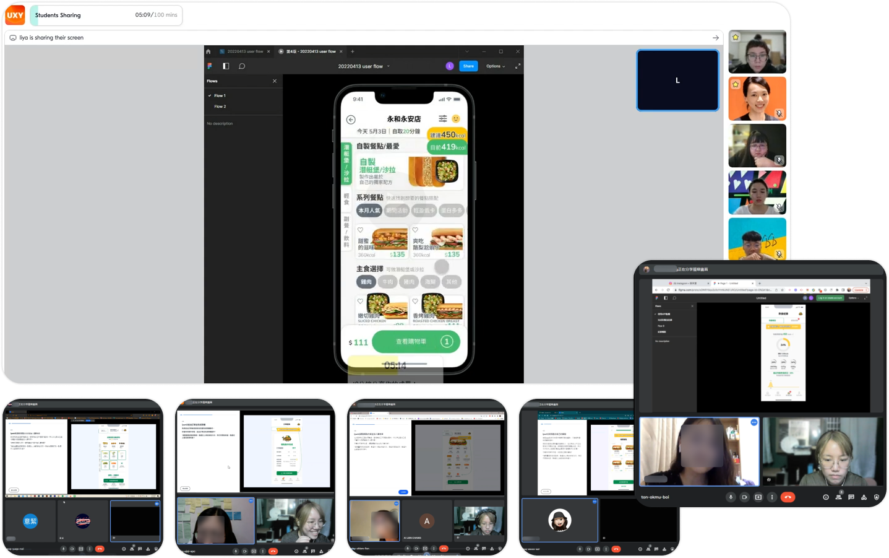
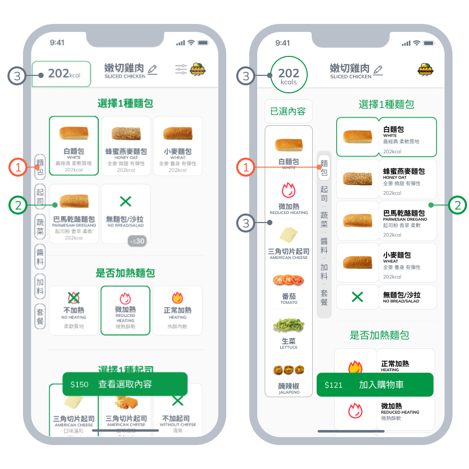
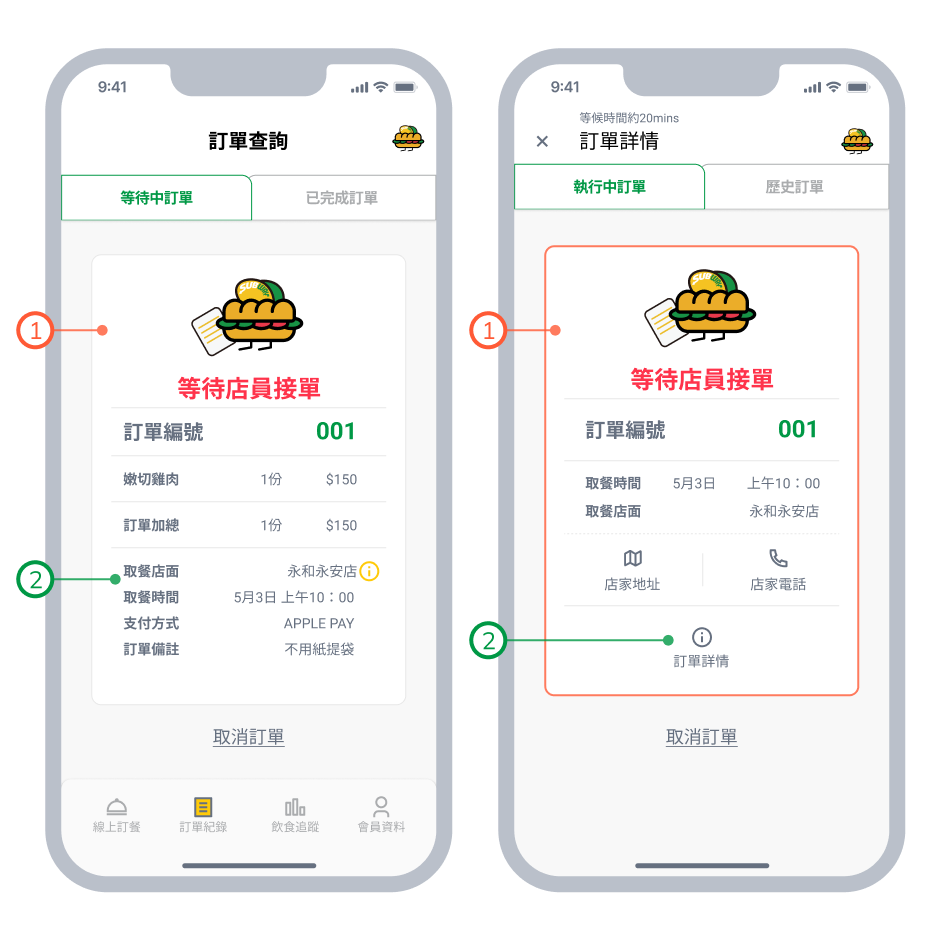

門市選擇前後對比
assets/22-iteration-store.png
assets/22-iteration-store.png

/* 01 */
門市選擇
掌握店家即時情況問題
- 可以查看店家資訊的東西不明顯
- 店家距離及等候時間能幫助我快速挑選店家，但有點難注意到店家篩選資訊
解決方式
- 1靠近選項，幫助理解其之間的關係
- 2加強重點的主次關係，讓重點資訊容易被注意
研究定義出 Mia 點餐時的三大關鍵斷點
上篇透過市場調查、80 份問卷與 5 位使用者訪談，提煉出主要角色「無固定飲食習慣的大學生 Mia」：她需要一個能無憂無慮挖掘美食、又能平衡罪惡感的點餐經驗。
影響 Mia 點餐體驗最深的三個斷點：
研究結論：選擇障礙 77.5%、時間無法掌握 35%
驗證四大功能是否真的幫助 Mia 順利點餐
上篇的解決方案是以「設計假設」提出的。本篇把原型交給符合目標族群的測試者實際操作，以 Maze 遠距測試與 SUS（系統可用性量表）量化結果，再依回饋迭代兩個版本。
本次驗證的四大功能：
驗證結果：Maze SUS 55 → 75（+20）
本案分為上下兩篇。本篇包含易用性測試、迭代後原型與學習與挑戰；若想查看研究＆設計（探索、洞察、問題定義＆發想、原型），請點擊此處。
我選擇使用 Maze 進行遠距測試，Maze 具有數據分析，而遠距能有效幫助我記錄測試者的螢幕和他們的表情。我找了 5 位符合目標族群的測試者進行 2 次易用性測試，驗證服務本身的價值並迭代版本，同時以 SUS 了解操作時遇到的問題與想法。
| 測試任務 | 驗證目標 | 對應上篇功能 |
|---|---|---|
| 進入應用程式註冊會員 | 是否會過於繁複？ | 註冊帳戶 |
| 使用餐點推薦服務 | 是否能幫助找到想要的餐點？ | 依需求推薦餐點 |
| 客製化餐點 | 是否易於理解選項與查看已挑選內容？ | 建議熱量條 |
| 送出訂單並完成取餐 | 是否便於理解、快速查看內容並完成動作？ | 掌握店家即時情況快速取餐辨識 |

在測試開始之前，我與一同學習 UI/UX 的朋友展示原型流程以獲取回饋。多數發現皆為介面上的調整，例如：菜單左側的餐點分類應改變樣式，避免誤會提供的功能與回饋。內部展示後，我找了 5 位測試者一起測試原型，其中 2 位在測試時無法錄製視訊。

第一版原型的兩項 SUS 評分都落在 D 級，代表測試者能完成任務，但過程不夠順暢。
根據測試回饋整理出有效項目與改善項目，依可用性問題的嚴重性等級排序後修改。第 2 版除了重新設計介面，也調整了部分點餐流程的順序。以下為四個關鍵畫面的前後對比：圖中左為第 1 版、右為第 2 版，圖上的編號對應右側的解決方式。

問題
解決方式
問題
解決方式

問題
解決方式

問題
解決方式
以與第 1 次相同的任務重新測試，確認先前問題是否改善，並以數據驗證重新排序後的點餐流程是否更流暢。
從第 1 次到第 2 次測試，所有指標都有提升：流程更短，兩項 SUS 評分都從 D 級提升到 B 級以上。
| 指標 | 第 1 次測試 | 第 2 次測試 | 變化 |
|---|---|---|---|
| 流程螢幕數量 | 36 頁 | 34 頁 | −2 頁 |
| Maze 生成可用性評分（SUS） | 55（D） | 75（B） | +20 |
| 測試者填寫可用性評分（SUS） | 60（D） | 84.5（A+） | +24.5 |
| 點餐流程滿意度 | 67 | 77 | +10 |
預設播放第二次迭代後的版本，也可切換回前兩個版本，看看註冊、找到想要的餐點搭配到結帳取餐的流程如何演進。
第二次迭代後・四大功能
依肉料、口味、熱量等需求給予餐點與醬料推薦，幫助 Mia 快速依需求調整客製化餐點
配合挑選餐點項目增減熱量，幫助 Mia 快速了解客製化餐點熱量
確認店家等待人數及餐點狀況，避免事後才知道要等很久，幫助 Mia 掌握店家的實際狀況
除取餐編號外，以顏色幫助店員快速辨識，提升取餐速度，幫助 Mia 減少與人接觸的時間
我從專案中了解到，儘管進行研究分析需要時間，但在為使用者設計服務時，讓產品能與使用者產生共鳴才是最重要的一步。此外，在開始初步研究之前，提出明確的假設和目標將給出明確的方向並節省大量額外的工作。
最後，由於這是我的第一個 UI/UX 專案，我嘗試使用盡可能多的工具與分析方式。但回過頭來看，其中一些可能沒有必要，且可以更加精確。
這次專注於幫助新使用者挑選餐點與快速點餐，未深入考量忠實使用者與員工所會需要的功能。Subway 的下一次迭代將專注於設計、測試和改進歷史紀錄功能，從以下假設開始：